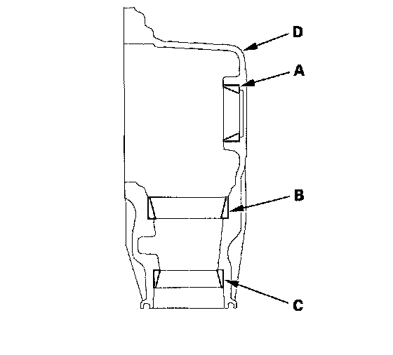
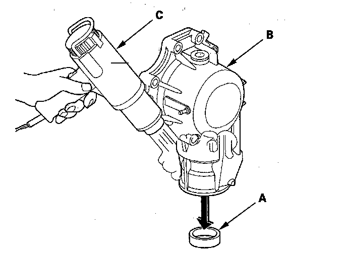
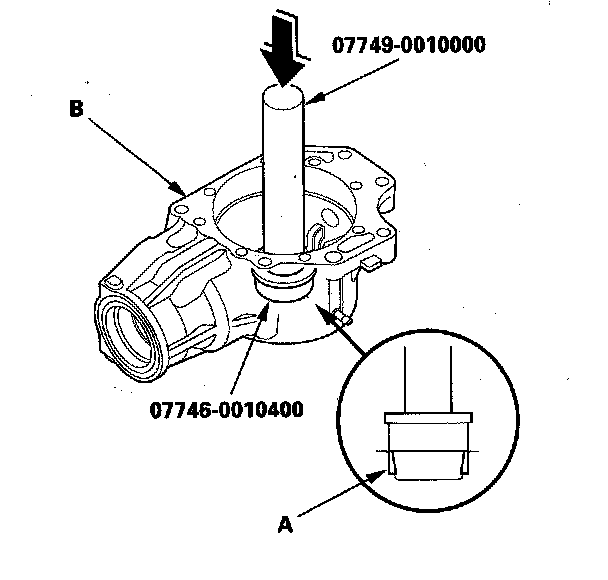
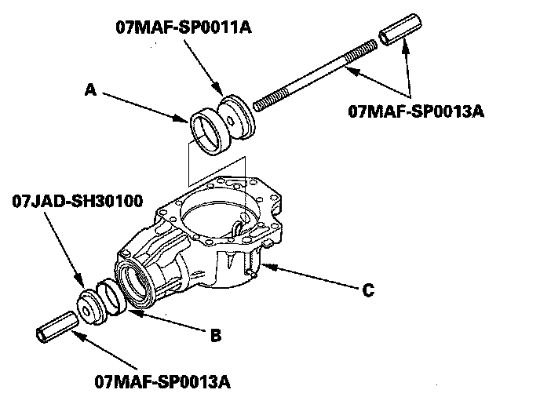
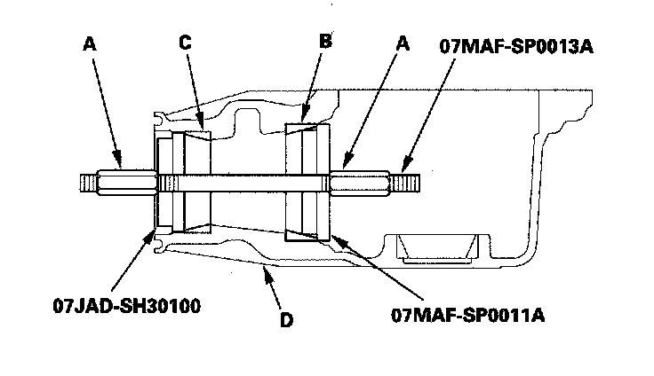

Transfer Housing Tapered Roller Bearing Outer Race Replacement
Transfer Housing Tapered Roller Bearing Outer Race ReplacementSpecial Tools Required
^ Driver 07749-0010000
^ Attachment, 52 x 55 mm 07746-0010400
^ Attachment, 65 mm 07JAD-SH30100
^ Tapered bearing race installer A 07MAF-SP0011A
^ Installer shaft 07MAF-SP0013A
NOTE: Replace the bearing with a new one whenever the outer race is replaced.
1. Remove the 52 mm bearing outer race (A) 75 mm outer race (B) and 65 mm outer race (C) from the transfer housing (D).
NOTE: Some bearing outer races (52 mm, 65 mm, and 75 mm) are press-fitted in the housing and must be removed by heating the housing.

2. Remove the press-fitted bearing outer race (A) from the transfer housing (B) by heating the housing to about 212°F (100°C) with a heat gun (C). Do not heat the housing more than 212°F (100°C).

3. Install the 52 mm bearing outer race (A) until it bottoms in the transfer housing (B) using the driver and the attachment (52 x 55 mm).

4. Install the 75 mm bearing outer race (A) and 65 mm bearing outer race (B) in the transfer housing (C) set the attachment (65 mm) and the tapered bearing race installer A over the races, and install the installer shaft through the attachment and installer.

5. Tighten the installer shaft nut (A) to install the races (B) (C) into the transfer housing (D) securely.
